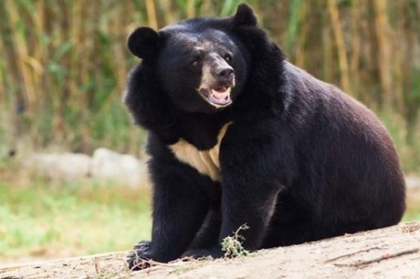

Gấu ngựa (Ursus thibetanus hay Ursus tibetanus), còn được biết đến với tên gọi Gấu đen Tây Tạng, Gấu đen Himalaya, hay gấu đen châu Á, là loài gấu kích thước trung bình, vuốt sắc, màu đen với hình chữ "V" đặc trưng màu trắng hay kem trên ngực. Loài gấu này có quan hệ họ hàng rất gần với gấu đen Mỹ, người ta tin rằng chúng có chung nguồn gốc tổ tiên ở châu Âu.
Phân bố
Gấu ngựa có khu vực sinh sống trải rộng từ đông sang tây châu Á. Chúng có thể tìm thấy trong rừng vùng đồi núi ở Đông Á và Nam Á, bao gồm một dải từ Afghanistan, Pakistan, sang bắc Ấn Độ, Nepal, Sikkim, Bhutan, Đông nam Á, đến tận đông bắc Trung Quốc, và cả Đài Loan, Nhật Bản. Chúng có thể sống trong những khu vực lên tới độ cao 3.000 m (9.900 ft). Ở một vài khu vực, gấu ngựa sống chung địa bàn với gấu nâu (Ursus arctos) là loài to hơn và khỏe hơn. Tuy nhiên, gấu ngựa có ưu thế trước đối thủ vì khả năng leo trèo giỏi giúp chúng lấy được hoa quả và các loại hạt trên cây cao. Môi trường sinh sống của gấu ngựa có nơi cũng trùng với gấu trúc như khu bảo tồn Ngọa Long, Trung Quốc. Nòi gấu ngựa tìm thấy ở Đài Loan là nòi gấu đen Đài Loan.
Đặc điểm
Gấu ngựa có chiều dài khoảng 1,30 - 1,90 m. Con đực cân nặng khoảng 110 – 150 kg còn con cái nhẹ hơn, khoảng 65 – 90 kg. Tuổi thọ của gấu khoảng 25 năm.
Gấu ngựa là loài ăn tạp, chúng ăn các loại thức ăn như hoa quả, quả mọng, cỏ, hạt, quả hạch, động vật thân mềm, mật ong và thịt (cá, chim, động vật gặm nhấm cũng như các động vật có vú nhỏ hay xác súc vật).Tuy nhiên cũng như những cá thể khác trong họ nhà Gấu ngày nay, hạt quả và cỏ đã không còn khả thi trong khẩu phần thức ăn của chúng bởi các tác hại của tật ăn tạp. Gấu ngựa là loài ăn thịt nhiều hơn anh em của nó là gấu đen Mỹ; dù vậy thịt chỉ là một phần nhỏ trong khẩu phần ăn.
Gấu ngựa còn được biết đến như là những con thú rất hung hăng đối với con người (hơn nhiều so với gấu đen Mỹ); có rất nhiều ghi chép về các cuộc tấn công gây thương vong của gấu ngựa. Điều này có lẽ chủ yếu là do gấu ngựa sống gần với con người và tấn công khi nó bị giật mình.
Gấu ngựa được đưa vào danh sách trong sách đỏ của IUCN (Hiệp hội bảo tồn thế giới) như là loài dễ bị thương tổn trong số các động vật đang bị đe dọa. Chúng bị đe dọa chủ yếu là do phá rừng và mất chỗ sinh sống. Gấu ngựa cũng bị giết bởi nông dân vì mối đe dọa của chúng đối với gia súc, gia cầm và chúng cũng không được yêu thích do tập tính hay bóc vỏ cây của chúng làm giảm giá trị của cây trồng. Một vấn đề khác mà gấu ngựa phải đối mặt là chúng thông thường hay bị săn để lấy mật, là chất được sử dụng trong y học Trung Hoa. Do Trung Quốc cấm việc săn bắt gấu ngựa từ những năm 1980, mật gấu được cung cấp tới tay người tiêu dùng bởi các trại nuôi gấu đặc biệt, ở đó gấu bị nuôi nhốt trong chuồng và mật gấu bị rút theo định kỳ bằng cách hút mật theo các ống kim tiêm sau khi gấu bị gây mê. Những người ủng hộ cho việc này cho rằng nếu không có các trang trại như vậy thì do nhu cầu về mật gấu là cao nên việc săn bắn trộm sẽ gia tăng và càng làm cho loài gấu vốn đã gặp nguy hiểm lại càng thêm nguy hiểm trong họa diệt chủng. Những người phê phán thì cho rằng việc này là độc ác và vô nhân đạo, hay mật gấu tổng hợp (axít ursodeoxycholic), cũng có hiệu quả y học như mật gấu thật và trên thực tế là rẻ tiền hơn nhiều.
Săn bắt
Ngày nay, gấu ngựa chỉ được săn bắt hợp pháp ở Nhật Bản và Nga.[2] Ở Nga, 75–100 con được săn bắt hàng năm, tuy nhiên con số không chính thức là 500 mỗi năm.[1] Môn thể thao săn gấu ngựa của người Nga được hợp pháp hóa năm 2004. Theo một bài viết năm 2008 đăng trên The Sun, Câu lạc bộ săn bắt slavơ của Nga cung cấp dịch vụ chuyến đi săn 4 ngày đảm bảo bắt được gấu với chi phí £16.000. Bài báo chỉ ra rằng khách hàng nhận được giấy phép săn gấu ngựa bao gồm những người từ Anh, Hoa Kỳ, Đức, Tây Ban Nha, Ba Lan và Phần Lan.
Tại Việt Nam nạn săn bắt gấu ngựa để lấy mật gấu đã gây ra nạn hàng trăm con gấu bị nhốt trong cũi và đặt ống vào bụng để rút mật. Ước tính vào năm 2005 là Việt Nam có 4.500 con gấu nuôi trong cũi với mục đích này. Song vì giá mật ngày càng giảm, chủ nuôi không có lời nên hàng trăm con bị bỏ đói cho chết, rồi đem xẻ thịt. Thịt gấu và tay gấu được dùng trong Đông y. Tính đến năm 2018 thì không tới 800 con vẫn bị nhốt để lấy mật ở Việt Nam.